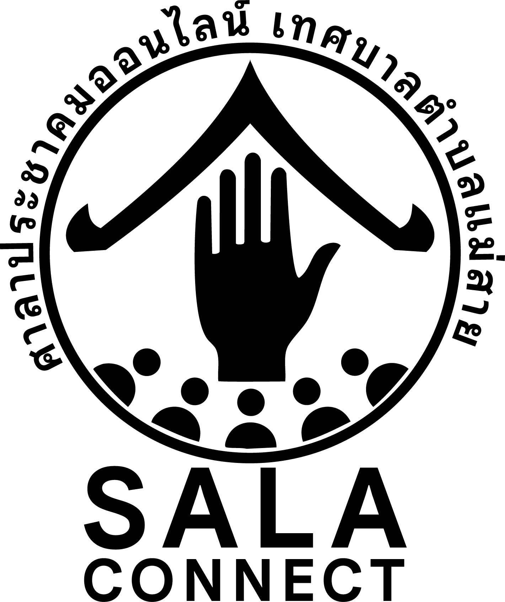

ศูนย์ควบคุมระบบศาลาประชาคมออนไลน์ เทศบาลตำบลแม่สาย (Local Port: 3405 | Path: /sala)
จองพอร์ต 3405 สำหรับ SALA CONNECT และกำหนดเส้นทาง Ingress ประตูเดียวคือ maesaios.com/sala/
พัฒนาและทดสอบบนเครื่อง Localhost ให้สมบูรณ์ 100% ห้ามส่งคำสั่งขึ้น Production Cloud โดยเด็ดขาดจนกว่าผู้ใช้จะตรวจอนุมัติ
เขียนไฟล์ลง .tmp ก่อนสลับชื่อ ป้องกันข้อมูลเสียหาย 100% พร้อมระบบ Snapshot สำรองข้อมูลรายวันอัตโนมัติ
ระบบนี้ใช้การพิสูจน์ตัวตนผ่านระบบ Session Token และเก็บบันทึกประวัติการทำงาน (Security Audit Log) ทุกรายการ
ห้ามเผยแพร่ข้อมูลรหัสผ่านหรือส่งต่อสิทธิ์การเข้าถึงให้แก่บุคคลภายนอกโดยเด็ดขาด
หากต้องการจัดการเพิ่มหรือเปลี่ยนรหัสผ่านเจ้าหน้าที่ ให้ดำเนินการผ่านระบบ Back Office ที่ /sala/back